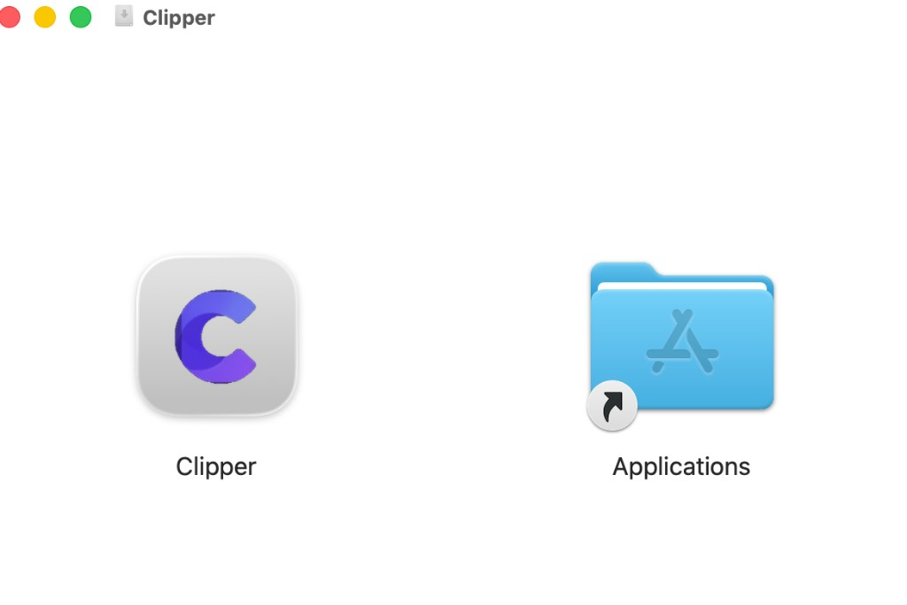
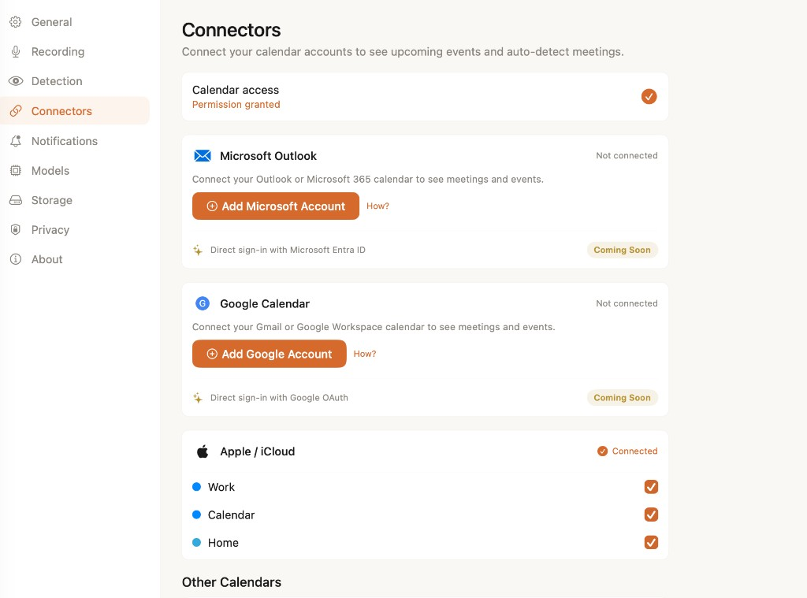
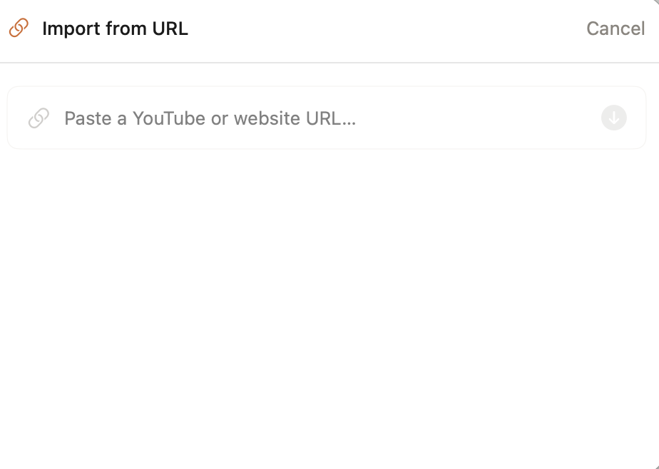
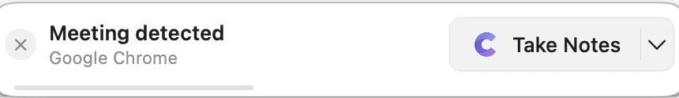
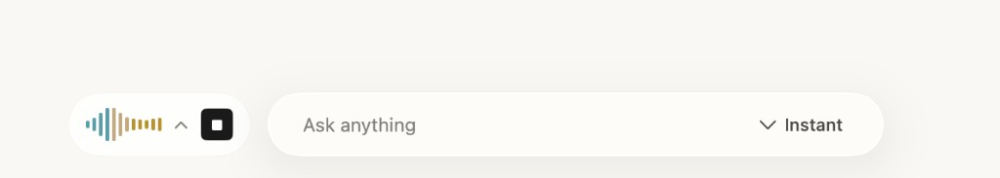
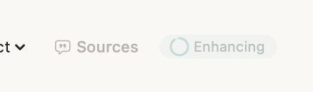
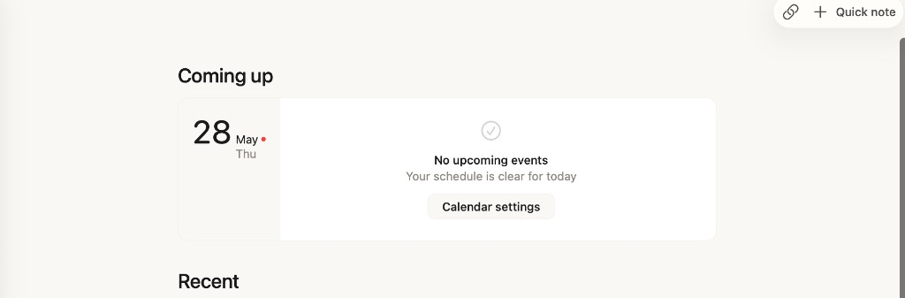

Platform availability
Clipper runs on macOS 26.0 or later on Apple Silicon Macs. There is no Windows or iOS app, and no Google or Microsoft sign-in — everything stays on your Mac.
Clipper can transcribe and summarize:
- Meetings on any software — Zoom, Google Meet, Microsoft Teams, and others
- In-person conversations via your microphone
- Voice memos and quick notes
- Audio from URLs you import (YouTube, web pages)
Unlike cloud notetakers, Clipper does not join your calls as a bot. It captures audio from your Mac and processes it entirely on-device.
System requirements
Before you install
- macOS 26.0+ on an Apple Silicon Mac
- 8 GB RAM minimum; 16 GB or more recommended for larger AI models
- ~3–9 GB free disk space for on-device models (exact size shown during onboarding)
- Internet connection for the one-time model download; processing stays local after that
Installing Clipper
-
Click Download for Mac on this site. Enter your email to verify and download the latest
Clipper-{version}.dmgfrom GitHub Releases. -
Open the DMG file from your Downloads folder.
-
Drag the Clipper icon into your Applications folder.

Launching Clipper
Open Clipper from your Applications folder, Launchpad, or Spotlight.
On first launch, macOS may show a warning that Clipper is from the internet. This is expected for direct downloads — click Open to continue. Clipper is signed with a Developer ID certificate and notarized by Apple.
The first time you launch Clipper, an onboarding sheet walks you through setup. This is a one-time experience.
First-launch onboarding
Clipper guides you through six steps. Use Back and Continue to move between them.
| Step | Title | What it covers |
|---|---|---|
| 1 | Your private work brain | Meetings, voice notes, and web research — all stored locally on your Mac |
| 2 | Capture without effort | Automatic meeting detection; recording always requires your consent |
| 3 | Privacy by design | On-device AI; microphone access needed for capture |
| 4 | Download AI models | Transcription, summarization, and search models — see below |
| 5 | Permissions | Microphone, Screen Recording, Notifications, Accessibility — see Permissions |
| 6 | Ready to go | Click Get Started to open the main app |
Download AI models
Clipper runs local models for transcription, summarization, live captions, and semantic search. During step 4, you can tap Download All or choose Download Later — models load automatically the first time you need them (via Settings → Models).
Models include:
- Gemma — summarization and AI chat
- Whisper or GLM-ASR — batch transcription after meetings
- Whisper Tiny — live transcription fallback
- BGE — embeddings for search
Which variant you get depends on your Mac's RAM. Onboarding shows the exact download size before you start.
Permissions
On step 5, Clipper asks for the permissions it needs to detect meetings, capture audio, and alert you. You can grant them now or later in System Settings.
Tip
Screen Recording captures audio only. Clipper never saves screen video from your calls.
Speech Recognition
Speech Recognition is not shown in onboarding. macOS prompts you the first time you start a recording or voice note. Allow it for live transcription.
Connect your calendar
Calendar access is not part of onboarding, but connecting your calendar unlocks upcoming meetings on Home and improves meeting detection.
-
Open Settings (⌘,) → Connectors.
-
Grant calendar access when prompted.
-
If needed, add Google, iCloud, or Exchange accounts via System Settings → Internet Accounts.
-
Enable the calendars you want Clipper to read. Data stays on your Mac.

Test your first capture
Clipper does not include a demo meeting — pick any flow below to see how local capture works.
Option A — Quick note
-
From Home, click Quick note in the toolbar — or press ⌘N.
-
Record a voice memo or jot down a few bullets. Clipper transcribes and saves everything on your Mac.
-
When you're done, stop recording. Your note appears in Home under Recent.
Option B — Import from URL
-
On Home, click the link icon in the toolbar to open Import from URL.
-
Paste a YouTube video or website URL, then press the import button.
-
Clipper fetches the content, transcribes audio locally, and creates a searchable note.

Option C — Record a meeting
-
Join or start a Zoom, Meet, or Teams call — or wait for Clipper's detection banner.
-
Tap Take Notes when the detection banner appears. Recording never starts without your consent.
-
Jot rough notes during the call. Clipper enhances them with the local transcript when the meeting ends.



You're all set
Clipper should now show your Home view with recent notes, Ask Clipper chat, and upcoming meetings if your calendar is connected.

Keyboard shortcuts
Updates
Clipper checks for updates every 24 hours. To check manually, choose Clipper → Check for Updates… from the menu bar.
Ready to capture your next meeting?
Download Clipper and start building your private work memory.
Download for MacTroubleshooting
No system audio from Zoom, Meet, or Teams
Confirm Screen Recording is enabled for Clipper in System Settings → Privacy & Security → Screen Recording.
Then open Settings → Recording in Clipper and ensure Record system audio is turned on.
No meeting detection alerts
Check that Notifications are allowed for Clipper, the master Meeting Detection toggle is on, and the app you're using (Zoom, Meet, Teams) is enabled under Settings → Detection.
Models not ready or summarization fails
Open Settings → Models and download or load the required models. You need an internet connection for the initial download.
Live transcript not appearing
Allow Speech Recognition when macOS prompts on first recording. If you skipped model download, ensure the live transcription model is loaded under Settings → Models.
Review or reset permissions
See the Permissions section for System Settings paths. You can also manage recording and detection preferences inside Clipper's Settings.
Still stuck?
Email us at hi@offlyn.ai and we'll help you get set up.